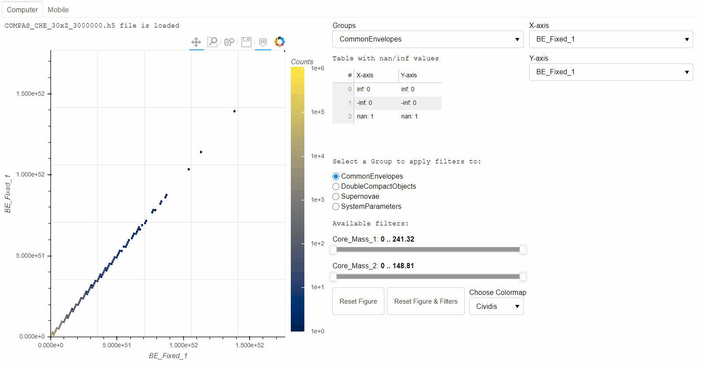

Internship with ADACS (Astronomy Data and Computing Services)
-
For the past three months, September-December 2020, I undertook an internship with ADACS. It was a period between successfully passing my PhD viva and finalising minor thesis amendments.
During that period I build a dynamic and interactive visualisation for COMPAS, using Bokeh. COMPAS (Compact Object Mergers: Population Astrophysics and Statistics) is a publicly available rapid binary population synthesis code, and Bokeh is an interactive visualization Python library for modern web browsers. You can see a final example shown by the "Gif" below.
I worked with many amazing people, contributed to the project and learned heaps. I experienced how an Agile Scrum teamwork functions, learned about Django, Celery, Phabricator, Poetry, WSL, COMPAS, and improved my Bokeh and Python skills. I also learned a lot from my teammates, for whom I am especially grateful for all their guidance and expertise.
My full internship story can be found here.
